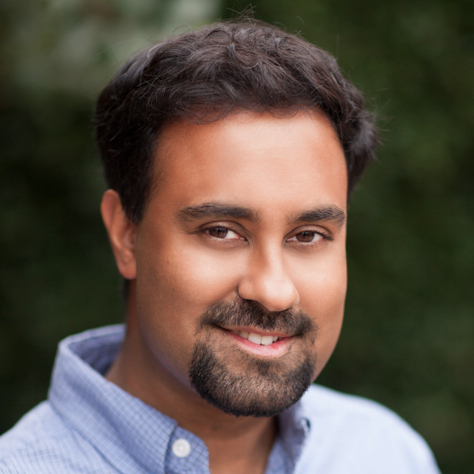
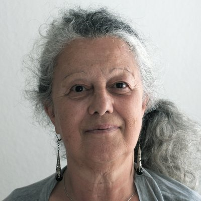

-
Official NeurIPS ML4PS schedule
(for NeurIPS attendees) -
ML4PS Gather Town(for NeurIPS attendees)TO BE ADDED SOON
How to attend
The workshop is taking place on Monday, December 13, 2021. It will be a combination of: (1) streamed invited talks and Q&A sessions, which can be watched live via SlidesLive or Zoom, and (2) poster sessions for accepted papers and community development breakouts, which are hosted in Gather Town.
Registration: You need to have a NeurIPS registration in order to attend and/or present your poster at this workshop. For registration please refer to NeurIPS 2021 website.
Streamed talks and Q&A sessions: Follow the official NeurIPS ML4PS schedule link on top of this page, which will take you to the page with the live SlidesLive stream and a RocketChat box where you can ask questions during the Q&A sessions. On the same page you can also find a Zoom link to join the same stream as a Zoom webinar (optional).
Poster sessions and community development breakouts: Follow the ML4PS Gather Town link (TO BE ADDED SOON) on top of this page that will take you to the workshop's Gather Town space, an interactive online environment where you can walk around and browse the posters, and interact with poster presenters and other attendees. This is the same setup used by NeurIPS main conference, and you can see an introductory video about Gather Town poster sessions here.
Note that all accepted papers and posters are also accessible publicly on this web page below.
Invited Talks
-

Megan AnsdellNASA Headquarters
-
Bingqing ChengUniversity of Cambridge
-

Surya GanguliMeta AI / Stanford University
-

Max WellingUniversity of Amsterdam
-

Laure ZannaNew York University
Panel Discussion
-
Jennifer ChayesUC Berkeley
-

Marylou GabriéNew York University / Flatiron Institute
-

Michela PaganiniDeepMind
-

Sara SollaNorthwestern University
-

Moderator: Lenka ZdeborováEPFL
Schedule
Check the times for your local time zone
- The workshp's official NeurIPS schedule page allows you to select your time zone, and the times should appear in your local time.
- Alternatively, we provide a schedule document that lists the schedule in several time zones.
Note: the times given below are in US/Eastern (UTC-5).
Session 1
| 09:00 AM – 09:10 AM | SlidesLive/Zoom |
Opening remarks (live) |
| 09:10 AM – 09:35 AM | SlidesLive/Zoom |
Invited talk: "Accelerating simulations of nature, both classical and quantum, with equivariant deep learning" (live) Max Welling (University of Amsterdam) |
| 09:35 AM – 09:45 AM | SlidesLive/Zoom |
Q&A with Max Welling (live) |
| 09:45 AM – 10:10 AM | SlidesLive/Zoom |
Invited talk: "Predicting material properties with the help of machine learning" (live) Bingqing Cheng (University of Cambridge) |
| 10:10 AM – 10:20 AM | SlidesLive/Zoom |
Q&A with Bingqing Cheng (live) |
| 10:20 AM – 10:35 AM | SlidesLive/Zoom |
Contributed talk: "Crystal Diffusion Variational Autoencoder for Periodic Material Generation" (live) Tian Xie (Massachusetts Institute of Technology) |
| 10:35 AM – 12:05 PM | Gather Town |
Poster session (live) |
Session 2
| 12:05 PM – 12:10 PM | SlidesLive/Zoom |
Opening remarks (live) |
| 12:10 PM – 01:10 PM | SlidesLive/Zoom |
Panel discussion Jennifer Chayes (UC Berkeley) Marylou Gabrié (New York University / Flatiron Institute) Michela Paganini (DeepMind) Sara Solla (Northwestern University) Moderator: Lenka Zdeborová (EPFL) |
| 01:10 PM – 01:35 PM | SlidesLive/Zoom |
Invited talk: "NASA's efforts & opportunities to support ML in the Physical Sciences" (live) Megan Ansdell (NASA Headquarters) |
| 01:35 PM – 01:45 PM | SlidesLive/Zoom |
Q&A with Megan Ansdell (live) |
| 01:45 PM – 02:00 PM | SlidesLive/Zoom |
Contributed talk: "Self-supervised similarity search for large scientific datasets" (live) George Stein (UC Berkeley) |
| 02:00 PM – 03:30 PM | Gather Town |
Poster session (live) |
Session 3
| 03:30 PM – 03:35 PM | SlidesLive/Zoom |
Opening remarks (live) |
| 03:35 PM – 04:00 PM | SlidesLive/Zoom |
Invited talk: "From the geometry of high dimensional energy landscapes to optimal annealing in a dissipative many body quantum optimizer" Surya Ganguli (Meta AI / Stanford University) |
| 04:00 PM – 04:10 PM | SlidesLive/Zoom |
Q&A with Surya Ganguli (live) |
| 04:10 PM – 04:35 PM | SlidesLive/Zoom |
Invited talk: "The future of climate modeling in the age of machine learning" Laure Zanna (New York University) |
| 04:35 PM – 04:45 PM | SlidesLive/Zoom |
Q&A with Laure Zanna (live) |
| 04:45 PM – 05:00 PM | SlidesLive/Zoom |
Contributed talk: "Amortized Bayesian inference of gravitational waves with normalizing flows" (live) Maximilian Dax (Max Planck Institute for Intelligent Systems) |
| 05:00 PM – 06:00 PM | Gather Town |
Community development breakouts (live) |
| 06:00 PM – 06:30 PM | SlidesLive/Zoom |
Feedback from community development breakouts (live) |
Organizers
-

Atılım Güneş BaydinUniversity of Oxford
-

Juan Felipe CarrasquillaVector Institute / University of Waterloo
-

Adji Bousso DiengPrinceton University
-

Emine KucukbenliHarvard University / Boston University
-

Gilles LouppeUniversity of Liège
-

Benjamin NachmanLawrence Berkeley National Laboratory
-

Brian NordFermilab
-

Savannah ThaisPrinceton University / IRIS-HEP
Steering Committee
-

Anima AnandkumarCaltech / NVIDIA
-

Kyle CranmerNew York University
-

Prabhat RamMicrosoft
-
Lenka ZdeborováEPFL
Papers/Posters
We have accepted 151 papers for poster presentation at the workshop.
ACCEPTED PAPERS WILL BE ADDED HERE SOON.
Program Committee (Reviewers)
We acknowledge 181 members of the program committee for providing reviews on a very tight schedule and making this workshop possible. They are listed in alphabetical order below.
Aashwin Mishra (Stanford University), Adam Coogan (Université de Montréal/Mila), Adina Feinstein (University of Chicago), Aishik Ghosh (University of California), Ajay Krishnan (SpaceML), Akshay Subramaniam (NVIDIA), Alex Cole (University of Amsterdam), Alexandre Szenicer (X), Alvaro Sanchez-Gonzalez (DeepMind), Amin Tavakoli (UC Irvine), Andrew White (University of Rochester), Anindita Maiti (Northeastern University), Antoine Wehenkel (University of Liège), Antonio Mastropietro (Politecnico di Torino), Arka Daw (Virginia Tech), Armi Tiihonen (Aalto University), Arnaud Delaunoy (University of Liege), Arrykrishna Mootoovaloo (Imperial College London), Asif Khan (University of Edinburgh), Asim Kadav (NEC Labs), Athénaïs Gautier (IMSV), Atilim Gunes Baydin (University of Oxford), Auralee Edelen (SLAC National Accelerator Laboratory), Austin Clyde (Argonne National Laboratory), Benjamin Miller (University of Amsterdam), Benjamin Nachman (Lawrence Berkeley National Laboratory), Brian Nord (Fermi National Accelerator Laboratory), Cenk Tüysüz (DESY), Cesar Quilodran Casas (Imperial College London), Charles Topliff (Georgia Institute of Technology), Christoph Weniger (University of Amsterdam), Chulin Wang (Northwestern University), Conrad Albrecht (German Aerospace Center), Constantin Weisser (QuantumBlack), Cristiano De Nobili (Pi School), Daniel Hackett (MIT), Daniel Murnane (Lawrence Berkeley National Laboratory), Denis Boyda (Argonne National Laboratory), Deniz Bezgin (Technical University of Munich), Deniz Ertuncay (University of Trieste), Dimitra Maoutsa (Technical University of Berlin), Duccio Pappadopulo (Bloomberg), Edward Elliott (Durham University), Eliane Maalouf (University of Neuchâtel), Emanuele Usai (Brown University), Emine Kucukbenli (Harvard University), Emmanuel Naziga (Wavo.me), Francesco Della Santa (Politecnico di Torino), Franco Pellegrini (École normale supérieure), Francois Lanusse (CEA Saclay), Gabriel Nathan Perdue (Fermilab), George Stein (UC Berkeley), Georges Tod (CRI), Gert-Jan Both (CRI), Gilles Louppe (University of Liège), Gregor Kasieczka (Universität Hamburg), Haozhu Wang (University of Michigan), Harry Liang (MIT), Huziel Sauceda (Technische Universität Berlin), Ilia Khait (University of Toronto), Ishan Khurjekar (University of Florida), Jack Collins (SLAC National Accelerator Lab), James Kahn (Karlsruhe Institute of Technology), James Spencer (DeepMind), Jan Hermann (FU Berlin), Javier Duarte (University of California San Diego), jean-roch vlimant (California Institute of Technology), Jenna Bilbrey (Pacific Northwest National Laboratory), Jingyi Tang (Stanford University), Joeri Hermans (University of Liège), John Wu (Space Telescope Science Institute), Jordi Tura (Leiden University), Joshua Bloom (UC Berkeley), Joshua Yao-Yu Lin (University of Illinois at Urbana-Champaign), Juan Carrasquilla (), Juan Emmanuel Johnson (IGE), Julian Urban (ITP Heidelberg), Junze Liu (University of California), Kai Fukami (University of California), Karolos Potamianos (University of Oxford), Kate Storey-Fisher (NYU), Keegan Stoner (Northeastern University), Keith Brown (Boston University), Keming Zhang (UC Berkeley), Koji Fukagata (Keio University), Krish Desai (University of California), Lauren Maffeo (Steampunk), Levente Klein (IBM Research), Li Yang (Google Research), Lingxiao Wang (Frankfurt Institute for Advanced Studies), Lipi Gupta (NERSC), Litu Rout (Indian Space Research Organisation), Luc Le Pottier (University of California), Ludger Paehler (Technical University of Munich), Lukas Heinrich (New York University), M. Maruf (Virginia Tech), Mariano Dominguez (IATE), Mariel Pettee (Lawrence Berkeley National Lab), Marios Mattheakis (Harvard University), Marylou Gabrié (NYU / Flatiron Institute), Maurizio Pierini (Cern), Maxim Ziatdinov (Oak Ridge National Laboratory), Maximilian Croci (University of Cambridge), Mayank Panwar (National Renewable Energy Laboratory), Mehmet Noyan (Ipsumio B.V.), Menachem Stern (University of Pennsylvania), Metin Bilgin (Bursa Uludağ University), Mia Liu (Purdue University), Michael Kagan (SLAC / Stanford), Milind Malshe (Georgia Institute of Technology), Namid Stillman (UCL), Nikolaus Adams (Technical University of Munich), Nils Thuerey (Technical University of Munich), Nishan Srishankar (WPI), Ondrej Hovorka (University of Southampton), Othmane Rifki (Spectrum Labs), Ouail Kitouni (Massachusetts Institute of Technology), Pablo Martin, Panagiotis Tigas (Oxford University), Pankaj Rajak (Argonne National Laboratory), Patrick Kidger (University of Oxford), Pedro L. C. Rodrigues (INRIA), Peetak Mitra (Palo Alto Research Center), Peter Harrington (Lawrence Berkeley National Laboratory (Berkeley Lab)), Pietro Vischia (Université catholique de Louvain), Prasanna Balaprakash (Argonne National Laboratory), Pulkit Khandelwal (University of Pennsylvania), Qi Tang (Los Alamos National Laboratory), Qi Zhang (The Hong Kong Polytechnic University), Raghav Kansal (UC San Diego), Ralph Kube (Princeton Plasma Physics Laboratory), Raunak Borker (Ansys), Rhys Goodall (University of Cambridge), Richard Feder (California Institute of Technology), Robert Zinkov (University of Oxford), Rodrigo Vargas Hernández (Chemistry department University of Toronto), Rohin Narayan (Southern Methodist University), Ryan Janssen (Harvard), Ryan-Rhys Griffiths (University of Cambridge), Sam Foreman (Argonne National Laboratory), Sandra Pieraccini (Politecnico di Torino), Satpreet H Singh (University of Washington), Sebastian Dorn (Max-Planck Institute), Sebastian Goldt (SISSA), Sebastian Macaluso (New York University), Sébastien Fabbro (NRC Herzberg Astronomy and Astrophysics), Sergey Shirobokov (Twitter), Shashank Sripad (Carnegie Mellon University), Shubhendu Trivedi (MIT), Siddharth Mishra-Sharma (MIT), Sirisha Rambhatla (University of Waterloo), Sravya Nimmagadda (NVIDIA), Srinandan Dasmahapatra (University of Southampton), Stephan Hoyer (Google), Stephen Webb (RadiaSoft LLC), Subramanian Ramamoorthy (University of Edinburgh), Sungyong Seo (Google), Takashi Matsubara (Osaka University), Téo Bloch (University of Reading), Tilman Plehn (Heidelberg), Tobias Golling (UniGe), Tomás Müller (University of Southampton), Tomo Lazovich (Lightmatter), Vedurumudi Priyanka (Sridevi Women's Engineering College), Victor Bapst (DeepMind), Vincent Dumont (Lawrence Berkeley National Laboratory), Vinicius Mikuni (NERSC), Viviana Acquaviva (CUNY NYC College of Technology), Vudtiwat Ngampruetikorn (The Graduate Center), Wai Tong Chung (Stanford University), Wang Zhou (Facebook), Xian Yeow Lee (Iowa State University), Xiangming Meng (The University of Tokyo), Xiangyang Ju (LBNL), Yasemin Bozkurt Varolgünes (Max Planck Institute for Polymer Research), Yilin Chen (Stanford University), Yin Li (Flatiron Institute), Yingtao Luo (University of Washington), Yuwei Sun (The University of Tokyo), Ziyan Zhu (Harvard University)
Call for papers
In this targeted workshop, we aim to bring together physical scientists and machine learning researchers who are interested in applying machine learning to various outstanding physical problems; or are using physical insights to understand and improve machine learning techniques.
We invite researchers to submit work particularly in the following and related areas:
- High-impact applications of machine learning to physical sciences, experiment or theory
- Strategies for incorporating prior scientific knowledge into machine learning algorithms
- Application of physical sciences to understand, model and improve machine learning techniques
- Machine learning model interpretability for obtaining insights to physical systems
- Any other area related to the subject of the workshop, including but not limited to techniques that are relevant to physical systems such as generative models, likelihood-free inference, variational inference, simulation-based inference, probabilistic models and so on.
Submissions of completed projects as well as high-quality works in progress are welcome. Submissions will be kept confidential until they are accepted and authors confirm that they can be included in the workshop. If a submission is not accepted, or withdrawn for any reason, it will be kept confidential and not made public.
Accepted work will be presented as posters during the workshop. Several accepted submissions will be selected for contributed talks. Please note that at least one coauthor of each accepted paper will be expected to have a NeurIPS conference registration that includes the workshop session and participate in one of the virtual poster sessions.
Important note for work that will be/has been published elsewhere:
All accepted short papers (extended abstracts) will be made available on the workshop website. This does not constitute an archival publication or formal proceedings; authors retain full copyright of their work and are free to publish their extended work in another journal or conference. We allow submission of extended abstracts that overlap with papers that are under review or have been recently published in a conference or a journal, including physical science journals. However, we do not accept cross submissions of the same content to multiple workshops at NeurIPS.
Submission instructions
Submissions should be anonymized short papers (extended abstracts) up to 4 pages in PDF format, typeset using the NeurIPS style. The authors are required to include a NeurIPS paper checklist, designed to encourage best practices for responsible machine learning research, addressing issues of reproducibility, transparency, research ethics, and societal impact. The paper checklist should come after the main paper content (see NeurIPS paper checklist guidelines). The paper checklist and references do not count towards the page limit. Appendices or supplementary material are discouraged, and reviewers are not expected to read beyond the first 4 pages and the impact statement. A workshop-specific modified NeurIPS style file will be provided for the camera-ready versions, after the author notification date.
Submissions page is here.
Submit paperInstructions for Accepted Papers
Authors of accepted papers are expected to upload their camera-ready (final) paper and a poster by the deadlines given on this page. Optionally they can also record a short (5-minute) video describing their work.
Camera-ready papers
Please produce the "camera-ready" (final) version of your accepted paper by replacing the "neurips_2021.sty" style file with the "neurips_2021_ml4ps.sty" file available here and using the "final" package option (that is, "\usepackage[final]{neurips_2021_ml4ps}") to include author and affiliation information. The modified style file replaces the first page footer to correctly refer to the workshop instead of the main conference. It is acceptable if your paper goes up to five pages (excluding acknowledgments, references, paper checklist and any appendices if present) due to author and affiliation information taking extra space on the first page. The five-page limit is strict, and appendices are allowed but discouraged. Authors are encouraged, though not required, to include the NeurIPS Paper Checklist at the end of the paper (not counted in the page limit).
Please revise your paper as much as you can to reasonably address reviewer comments. The revision would include minor corrections and/or changes to directly address reviewer comments. Beyond these points, it is not acceptable to include any significant new material that was not present in the reviewed version of your paper.
Please upload the final PDF of your paper by the camera-ready deadline, by logging in to the CMT website (the same one used for the submissions) and using the camera-ready link shown with your existing submission.
Posters
The poster sessions will take place virtually in two GatherTown sessions. Posters will be presented during live and interactive sessions with virtual poster boards, where the presenter and the participants will be able to interact with audio and video. You will have control of your audio and video and can turn them on and off at any point as you wish. GatherTown is quite fun and it emulates a physical poster session venue where attendees can freely walk from poster to poster and interact in groups with the presenters through audio/video. Posters will be visible in full within the GatherTown platform and the attendees will have the possibility to zoom in to parts of your poster.
Please prepare an A0 landscape poster. The landscape orientation ensures that your poster is seen best in computer screens. We have observed a regular A0 format (as one would prepare for an in-person poster session where the posters are printed on A0 paper) also works fine in the GatherTown interface.
Please upload your poster by the poster upload deadline, using the central NeurIPS poster upload page and following the instructions given there regarding the file formats and resolutions.
In order to see the entry for your paper listed in the NeurIPS poster upload page, the co-author who is uploading the poster needs to be logged in to the neurips.cc website using the same email address they used in their paper submission. If you encounter a problem regarding NeurIPS accounts (e.g., you have multiple accounts associated with different email addresses and you need to merge these accounts into a single one), please consult the NeurIPS account FAQs and get in touch with the main NeurIPS conference organization who are handling accounts and registrations.
Optional videos
You can record a short video in addition to your poster, using the SlidesLive service contracted by NeurIPS to handle all video presentations. Uploaded videos will be available to watch on demand under the NeurIPS SlidesLive account. The video should be a brief (less than 5 minutes) presentation of your work in the accepted paper. Uploading a video is optional.
Authors of accepted papers will receive separate instructions from the SlidesLive team, who will share with you the URL and other info you need to use for video recording.
If you need some examples, you can see the posters and videos presented in the 2020 instance of the workshop here.
Important dates
- Submission deadline:
September 18,September 27, 2021, 23:59 AoE - Author notification:
October 15,October 21, 2021, 23:59 PDT - Camera-ready (final) paper deadline: November 26, 2021, 23:59 PDT
- Poster deadline: November 26, 2021, 23:59 PDT
- Workshop: December 13, 2021
Registration
NeurIPS conference has three main sessions (Tutorials, Conference, Workshops) to which you can register. You need to be registered to at least the Workshop session in order to be able to attend this workshop. For the latest registration-related information please refer to NeurIPS 2021 website.
About
Machine learning methods have had great success in learning complex representations of data that enable novel modeling and data processing approaches in many scientific disciplines. Physical sciences span problems and challenges at all scales in the universe: from finding exoplanets in trillions of sky pixels, to developing solutions to the quantum many-body problem and combinatorial problems, to detecting anomalies in event streams from the Large Hadron Collider, to predicting how extreme weather events will vary with climate change. Tackling a number of associated data-intensive tasks including, but not limited to, segmentation, computer vision, sequence modeling, causal reasoning, generative modeling, and probabilistic inference are critical for furthering scientific discovery in these and many other areas. In addition to using machine learning models for scientific discovery, the ability to interpret what a model has learned is receiving an increasing amount of attention.
In this targeted workshop, we aim to bring together computer scientists, mathematicians and physical scientists who are interested in applying machine learning to various outstanding physical problems including in inverse problems, approximating physical processes, understanding what a learned model represents, and connecting tools and insights from the physical sciences to the study of machine learning models. In particular, the workshop invites researchers to contribute short papers (extended abstracts) that demonstrate cutting-edge progress in the application of machine learning techniques to real-world problems in the physical sciences and/or using physical insights to understand and improve machine learning techniques.
By bringing together machine learning researchers and physical scientists who apply machine learning, we expect to strengthen the interdisciplinary dialogue, introduce exciting new open problems to the broader community, and stimulate the production of new approaches to solving challenging open problems in the sciences. Invited talks from leading individuals in both communities will cover the state-of-the-art techniques and set the stage for this workshop.
NeurIPS 2021
 The Machine Learning and the Physical Sciences 2021 workshop will be held on December 13, 2021 as a part of the 35th Annual Conference on Neural Information Processing Systems. Originally planned to be at the Vancouver Convention Centre, Vancouver, BC, Canada, NeurIPS 2021 and this workshop will take place entirely virtually (online). Please check the main conference website for the latest information.
The Machine Learning and the Physical Sciences 2021 workshop will be held on December 13, 2021 as a part of the 35th Annual Conference on Neural Information Processing Systems. Originally planned to be at the Vancouver Convention Centre, Vancouver, BC, Canada, NeurIPS 2021 and this workshop will take place entirely virtually (online). Please check the main conference website for the latest information.
Sponsors
Location
Originally planned to be at the Vancouver Convention Centre, Vancouver, BC, Canada, NeurIPS 2021 and this workshop will take place entirely virtually (online). Please check the main conference website for the latest information.